정보통신산업기사 (2003-05-25 기출문제)
1과목: 디지털전자회로
1. 트랜지스터 회로의 바이어스 안정도(S)가 가장 좋은 것은?
- S = 1
- S = π
- S = 50
- S = ∞
(정답률: 알수없음)

2. 제너 다이오드의 제너 전압 Vz=10[V]/0.5[W] 인 경우 최대 전류의 크기는?
- 0.5[A]
- 0.⑤[A]
- 0.5[㎃]
- 0.⑤[㎃]
(정답률: 알수없음)
3. 다음 중 C-MOS 집적회로의 특징으로 옳지 않은 것은?
- 전력소모가 대단히 적다.
- 소형, 경량이다.
- 반영구적이다.
- 동작속도가 TTL에 비하여 매우 빠르다.
(정답률: 알수없음)
4. 주파수변조에서 다음 변조지수중 대역폭이 가장 넓은 것은?
- 0.17
- 2.9
- 3.1
- 4.2
(정답률: 알수없음)
5. 다음과 같은 회로에서 발진기로 동작하기 위해서는 Rf는 몇[kΩ]인가? (단, R1=6[kΩ], C=0.0⑤[μ F], R=15[kΩ]이다.)
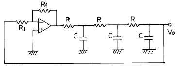
- 174
- 29
- 87
- 18
(정답률: 알수없음)
6. 논리식 A + AB 를 간략화하면?
- A
- B
- 1
- AB
(정답률: 알수없음)
7. TTL NAND 게이트를 이용한 단안정 멀티바이브레이터 회로에서 C = 100[pF]이고 트리거 입력이 100[KHz]일 때의 입력파형과 출력파형이 그림과 같다면 저항 R 값은?
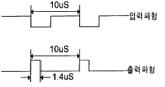
- 200[Ω]
- 2[㏀]
- 20[㏀]
- 200[㏀]
(정답률: 알수없음)
8. 다음은 CR 발진기를 설명한 것이다. 거리가 먼 것은?
- 낮은 주파수 범위에서 쓰이는 발진기이다.
- 이상형과 브리지형 발진기로 나뉜다.
- LC 발진기에 비해 주파수 범위가 좁으며 대체로 1[㎒] 이하이다.
- 대개 C급으로 동작시켜 효율을 높인다.
(정답률: 알수없음)
9. 4 개의 J-K 플립플롭을 이용하여 구성할 수 있는 분주기의 최대값은 얼마인가?
- 8분주기
- 10분주기
- 16분주기
- 24분주기
(정답률: 알수없음)
10. 다음 2진 부호는 어떤 종류의 부호인가?
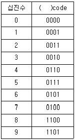
- Hamming code
- Gray code
- BCH code
- Excess 3 code
(정답률: 알수없음)
11. SSB(Single Side Band)에 관한 설명 중 맞는 것은?
- LSB와 USB로 구성된다.
- 전력 손실이 높다.
- 점유주파수 대폭이 반으로 줄어들고, 전력소모도 훨씬 적어진다.
- DSB에 비하여 진폭이 2배로 늘어난다.
(정답률: 알수없음)
12. 그림의 적분기에 STEP 전압을 입력시켰을 때의 출력 파형은?
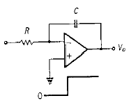
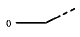
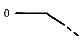
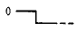
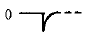
(정답률: 알수없음)
13. 다음 10진수 → 2진수 → 1의 보수 → 2의 보수의 관계를 나타낸 것중 옳은 것은?
- 8 → 1000 → 1001 → 0110
- 7 → 0111 → 1000 → 0111
- 9 → 1001 → 0110 → 0111
- 8 → 1000 → 0111 → 1110
(정답률: 알수없음)
14. 다음 회로의 출력 Vo를 계산하면?
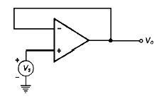
- Vo = Vs
- Vo = -Vs
- Vo = 0
- Vo = Vs / 2
(정답률: 알수없음)
15. 다음은 반 가산기(half adder)회로이다. X, Y에 각각 어떤 게이트 회로가 사용되어야 하는가? (순서대로 X, Y)
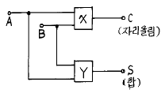
- AND, 배타적 OR
- 배타적 OR, AND
- OR, 배타적 OR
- 배타적 OR, OR
(정답률: 알수없음)
16. PNP와 NPN트랜지스터를 조합하여 이루어진 Push-Pull 증폭회로를 무슨 회로라고 하는가?
- OTL
- OCL
- 위상반전회로
- 콤프리멘타리회로
(정답률: 알수없음)
17. 그림 A파형의 정현파를 그림 B의 구형파로 바꾸려면 어느 회로를 사용하면 가능한가?
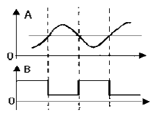
- 부우드 스트랩 회로
- 블로킹 발진기
- 슈미트 트리거 회로
- 다이오우드 pump회로
(정답률: 알수없음)
18. 다음 JK Flip-Flop의 입력신호 주파수가 1[㎒]일 때 출력신호의 주파수는?
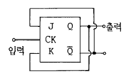
- 100[㎑]
- 500[㎑]
- 1[㎒]
- 4[㎒]
(정답률: 알수없음)
19. 트랜지스터의 스위칭 동작에서 turn-off 시간은?
- 지연시간(td)
- 지연시간(td)+상승시간(tr)
- 축적시간(ts)
- 축적시간(ts)+하강시간(tf)
(정답률: 알수없음)
20. 그림과 같은 상보대칭 푸시풀 회로에 관한 설명 중 관계 가 없는 것은?
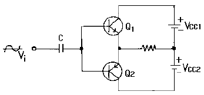
- 입력신호의 서로 다른 반주기동안 Q1과 Q2가 각각 동작한다.
- 출력신호에 크로스오버(CROSS OVER)일그러짐이 없다.
- 이미터 플로워 증폭기이므로 낮은 부하저항과 임피던스가 정합되어 효율적이다.
- 온도보상에 의해 안정도를 향상시키려면 이미터에 저항을 넣는다.
(정답률: 알수없음)
2과목: 정보통신기기
21. 디지털데이터를 디지털신호로 전송하는 장치는?
- CODEC
- 변복조기
- DSU
- 전화
(정답률: 알수없음)
22. 푸시버튼식 전화기에서 쓰이는 푸시버튼 신호의 고군 주파수가 아닌 것은?
- 1209 Hz
- 1336 Hz
- 1477 Hz
- 1778 Hz
(정답률: 알수없음)
23. CCTV 시스템의 기본 구성에 속하지 않는 것은?
- 촬상계
- 전송계
- 수상계
- 영상처리계
(정답률: 알수없음)
24. 화상회의 시스템의 음향부가 갖는 기능이 아닌 것은?
- 반향방지기능
- 변복조기능
- 등화기능
- 혼합(Mixing)기능
(정답률: 알수없음)
25. 사설구내교환기와 전화망 접속에서 외부 가입자가 교환원의 도움을 받지 않고 직접 구내교환기의 내부가입자를 호출할 수 있는 방식은?
- DOD
- DID
- ACD
- CBX
(정답률: 알수없음)
26. 지구국 카세그레린 안테나의 이득은? (단, G : 이득, R : 안테나직경, λ : 파장, η : 안테나의 능률)
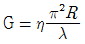
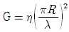
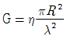
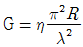
(정답률: 알수없음)
27. 포트 셀렉터의 설명으로 틀린 것은?
- 컴퓨터와 단말기 사이에 인터페이스를 제공한다.
- 멀티포인트 네트워크에 사용된다.
- 버스형 콘텐션 네트워크에 사용된다.
- 컴퓨터 포트의 증가없이 다수의 단말기를 연결한다.
(정답률: 알수없음)
28. 무선통신에서 신호의 품질을 평가하는 척도는?
- 신호대 변조전력비
- 정보의 전송량
- 신호대 잡음비
- 전송 주파수
(정답률: 알수없음)
29. CATV의 발전요인이 아닌 것은?
- 도시잡음 등의 고주파 방해잡음의 증가에 의한 화질의 열화
- 지역정보 시스템의 사회적 필요성
- TV 방송 프로그램의 다채널 요망
- 중요건물의 시설 감시
(정답률: 알수없음)
30. 컴퓨터가 이해할 수 있는 형태로 데이터를 변환하여 입력시키는 장치가 아닌 것은?
- 키보드
- 광마우스
- 디지타이저
- XY플로터
(정답률: 알수없음)
31. 2개 또는 6개 이상의 음성대역 회선을 사용하여 고속 전송을 할수 있는 기기의 이름은?
- 집중화기
- 시분할 다중화기
- 지능 다중화기
- 역 다중화기
(정답률: 알수없음)
32. 지능 다중화기에 대해서 바르게 설명한 것은?
- 동기식 시분할 다중화기라고도 한다
- 동적인 시간 폭의 배정이 가능하다
- 집중화 장비의 기능을 수행하지 못한다.
- 전송효율이 대체적으로 낮다.
(정답률: 알수없음)
33. 다음 중 위성통신용 지구국의 기본구성이 아닌 것은?
- 안테나계
- 송수신계
- 인터페이스계
- 자세제어계
(정답률: 알수없음)
34. MHS(Message Handling System)의 기본 기능중 UA(User Agent)기능을 실현하기 위한 가장 타당한 방법은?
- MHS의 Node에서 실현하는 방법
- MHS의 User에서 실현하는 방법
- MHS의 초기 입력단에서 실현하는 방법
- MHS의 타 서비스 기능을 이용하는 방법
(정답률: 알수없음)
35. 일반적인 무선 송신기의 구성으로 필수적인 사항이 아닌 것은?
- 전원부
- 검파부
- 발진부
- 변조부
(정답률: 알수없음)
36. 정보통신 시스템은 데이터 전송계와 데이터 처리계로 크게 나뉜다. 다음 중 데이터 처리계가 아닌 것은?
- 정보 가공
- 속도 제어
- 데이터 처리
- 저장 매체 운용
(정답률: 알수없음)
37. 통신제어 처리장치 중 컴퓨터와 통신 네트워크 사이에 메시지 통신 제어와 데이터 형식 변환 등의 통신처리를 하는 것은?
- 전단 처리 장치
- 단말기 인터페이스 프로세서
- 다기능 통신제어 처리기
- 원격 통신제어 장치
(정답률: 알수없음)
38. 통신 구간에서 온도 변화에 의해서 발생하는 잡음은?
- 누화 잡음
- 백색 잡음
- 충격 잡음
- 상호 변조 잡음
(정답률: 알수없음)
39. 주문형비디오(VOD)시스템 구성장치로 압축된 비디오신호를 원래의 영상/음성신호로 복구하는 것은?
- 비디오서버
- 신호분배기(Signal Distributer)
- ATM 교환기
- 세톱(Set-Top)박스
(정답률: 알수없음)
40. 교환기의 중계선 정합부의 기능이 아닌 것은?
- 프레임 코드 발생
- 프레임 배열
- 가입자 회선 감시
- 클럭 발생
(정답률: 알수없음)
3과목: 정보전송개론
41. 데이터 통신에서 에러의 검출 및 교정까지 할 수 있는 부호는?
- 2 out of 5 code
- Hamming code
- Excess - 3 code
- 2 진 parity
(정답률: 알수없음)
42. 모뎀(Modem)의 구성장치중에서 전송로상의 잡음이나 왜곡에 의해 발생되는 위상지연이나 주파수에 따른 진폭감쇄를 보상해 주는 장치는?
- 자동이득조절기
- 대역 통과 여파기
- 디스크램블러
- 등화기
(정답률: 60%)
43. 데이터 링크의 초기설정,데이터 전송 동작모드의 설정요구 및 그에 대한 응답용으로 사용하기 위해서는 HDLC프로토콜의 제어부를 다음중 어떤 형식으로 만들어야 하는가?
- 정보전송형식
- 감시형식
- 비번호제형식
- 절단형식
(정답률: 알수없음)
44. PCM 통신의 부호화 과정에서 널리 사용되고 있는 부호는?
- Gray 부호
- BCD 부호
- Biquinary부호
- Hamming 부호
(정답률: 알수없음)
45. 기저대 신호(base band signal)의 설명은?
- 원래의 정보를 이와 동일한 스펙트럼을 같도록 부호화 하는 방법
- 원래의 정보를 이와 다른 스펙트럼을 같도록 부호화 하는 방법
- 원래의 정보를 주파수 천이(shift) 시켜 부호화 하는 방법
- 변조된 정보를 복조하여 부호화 하는 방법
(정답률: 알수없음)
46. 이동통신채널의 특징중 이동체의 움직임에 따라 수신신호 주파수가 변하는것과 가장 관계 깊은것은?
- 페이딩
- 채널간섭
- 지연확산
- 도플러현상
(정답률: 알수없음)
47. 채널의 전송용량 C(bit/sec)를 결정하는 식은? (단, BW : 채널의 대역, S : 신호전력, N : 백색잡음전력)
- C = BW log2(1 + S/N)
- C = N log2(BW/N)
- C = BW(1 + S/N)
- C = BW log10(1 + S/N)
(정답률: 알수없음)
48. 다음중 NRZ 코드방식의 특징과 다른 것은?
- RZ 코드방식보다 넓은 대역폭이 필요하다.
- 비트신호의 변화에 따라 전압레벨이 바뀌게 된다.
- 직류성분이 존재하며, 동기화 능력이 부족하다.
- 신호를 보내는 매체의 극성에 무관하다.
(정답률: 알수없음)
49. ARQ란 어느 것인가?
- 에러를 검출하는 방식이다.
- 에러가 검출된 부분의 데이터를 재전송해 주도록 요구하는 것이다.
- 무오자 방식이다.
- 부호를 전송하는 방식이다.
(정답률: 알수없음)
50. 다음과 같은 데이터를 전송하고자 하는 경우 패리티 비트 (해밍비트)는?
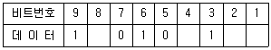
- 0101
- 1010
- 0011
- 1100
(정답률: 알수없음)
51. 데이터 전송방식중 동기식 전송방식에 해당하는 것은?
- 전송되는 각 글자 사이에는 일정치 않은 휴지 기간이 있을 수 있다.
- 각 비트 길이는 통신속도에 따라 정해지며 일정하다.
- 수신측 단말에 버퍼기억장치가 필요하다.
- 동기는 글자단위로 이루어진다.
(정답률: 알수없음)
52. 다음 전송로의 특징을 서술한 내용중 알맞는 전송로는?
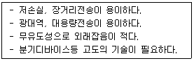
- 페어케이블
- 무장하케이블
- 광파이버
- 동축케이블
(정답률: 알수없음)
53. 다음 광학 파라메터(parameter)중 광케이블이 단일모드 파이버(single mode fiber)인지 다중모드 파이버(multi mode fiber)인지를 구분하는데 사용되는 것은?
- 개구수
- 비굴절률차
- 수광각
- 규격화 주파수
(정답률: 알수없음)
54. 다음 디지털 변조 방식중 가장 빠른 데이터 전송에 적용될 수 있는 방식은?
- QAM
- FSK
- PSK
- ASK
(정답률: 알수없음)
55. 전송선로의 전송특성 요인이 아닌 것은?
- 전송손실
- 주파수 특성
- 누화특성
- 전계강도
(정답률: 알수없음)
56. 케이블 선로에서 장하라 함은 무엇을 의미하는가?
- C를 첨가하는 것
- G를 첨가하는 것
- R를 첨가하는 것
- L를 첨가하는 것
(정답률: 알수없음)
57. 프레임 동기 유지 접근 방식 프로토콜이 아닌 것은?
- 문자 지향형 프로토콜
- 비트 지향형 프로토콜
- 카운트 지향형 프로토콜
- 경로 선택 프로토콜
(정답률: 알수없음)
58. 디지털변조 QPSK로 나타낼 수 있는 신호의 비트 수는?
- 2
- 4
- 6
- 8
(정답률: 알수없음)
59. 차분펄스부호변조방식의 양자화기, 예측기중 어느 하나 또는 모두를 적응형으로 변화시킨 방식은?
- DM
- LDM
- DPCM
- ADPCM
(정답률: 알수없음)
60. 다음 중 CDMA 이동통신에 이용되는 대역 확산 방식이 아닌 것은?
- 주파수호핑방법
- 잡음호핑방법
- 직접시퀀스방법
- 시간호핑방법
(정답률: 알수없음)
4과목: 전자계산기일반 및 정보설비기준
61. 서브루틴의 호출에 이용되는 자료구조는?
- 큐(queue)
- 스택(stack)
- 배열(array)
- 리스트(list)
(정답률: 알수없음)
62. 다음 요소들 중에서 정보통신 전송기준의 척도에 해당되지 않는 것은?
- 비트 오율
- 블록 오율
- 호손율
- 전신 왜율
(정답률: 알수없음)
63. 64비트 마이크로프로세서에서 데이터 버스(date bus)는 몇 개의 선으로 구성되어 있는가?
- 4개
- 8개
- 32개
- 64개
(정답률: 알수없음)
64. 고압 전력선이 통신회선에 전력유도 영향을 주는 경우 이에 대한 방지조치를 하여야 한다. 이때 이상시 유도 위험전압의 제한치는?
- 110[V]
- 300[V]
- 600[V]
- 650[V]
(정답률: 알수없음)
65. 정보 및 이와 관련되는 설비, 기술, 인력 및 자금 등 정보화에 필요한 자원을 무엇이라고 하는가?
- 정보통신설비
- 정보자원
- 전산조직
- 데이터
(정답률: 알수없음)
66. 다음 중 음압레벨의 단위는?
- 디비엠(dBm)
- 디비(dB)
- 디비에스피엘(dBSPL)
- 헤르츠(Hz)
(정답률: 알수없음)
67. 10진수 738에 대한 BCD 코드(binary coded decimal)는?
- 0111 0011 1000
- 1110 0011 1000
- 1010 0111 0011
- 0010 1110 0010
(정답률: 알수없음)
68. 사업용 전기통신설비의 분계점은 어떻게 정하는가?
- 기간통신사업자가 정한다.
- 사업자 상호간의 합의에 의한다.
- 전기통신설비를 구축하는 자가 정한다.
- 전기통신사업을 운영 관리하는 자가 정한다.
(정답률: 알수없음)
69. 정보통신부장관이 수립하는 전기통신기본계획에 포함되는 사항이 아닌 것은?
- 전기통신의 이용효율화에 관한 사항
- 전기통신 정책방향에 관한 사항
- 전기통신의 질서유지에 관한 사항
- 전기통신설비에 관한 사항
(정답률: 알수없음)
70. 컴퓨터가 프로그램을 수행하고 있는 동안 컴퓨터의 내부나 외부에서 응급상태가 발생하여 현재 수행중인 프로그램을 일시적으로 중지하고 응급사태를 처리하는 기법은?
- DMA
- Time sharing
- Subroutine
- Interrupt
(정답률: 알수없음)
71. 컴퓨터의 논리소자 발달과정을 가장 올바르게 표현한 것은 어느 것인가?
- 진공관-집적회로-트랜지스터-고밀도 집적회로
- 트랜지스터-진공관-고밀도 집적회로-집적회로
- 진공관-트랜지스터-집적회로-고밀도 집적회로
- 진공관- 초고밀도집적회로-고밀도집적회로-트랜지스터
(정답률: 알수없음)
72. 정보통신공사업의 등록기준에 해당되지 않는 것은?
- 기술능력
- 자본금
- 사무실(작업실)
- 공사용 기기
(정답률: 알수없음)
73. 데이터의 처리에서 중앙처리장치와 입.출력장치와의 속도차에서 오는 비효율적인 요소를 최대로 줄인 장치는?
- 병렬연산장치
- 채널제어장치
- 인덱스 레지스터
- 부동소수점처리 프로세서
(정답률: 알수없음)
74. 데이터의 표현 단위와 관계가 먼 것은?
- 바이트(byte)
- 레코드(record)
- 메모리(memory)
- 파일(file)
(정답률: 알수없음)
75. 전자 계산기의 기본 논리 회로는 조합 논리 회로와 순서논리 회로로 구분 된다. 이중 조합 논리 회로에 해당 되는 것은?
- RAM
- 2진다운카운터
- 반 가산기
- 2진 업 카운터
(정답률: 알수없음)
76. 컴퓨터의 행위를 감시하고 통제하여 효율적으로 편리하게 이용할 수 있도록 도와주는 프로그램의 집단은?
- assembler
- compiler
- monitor
- operating system
(정답률: 알수없음)
77. 전기통신사업자의 분류에 속하지 않은 자는?
- 기간통신사업자
- 별정통신사업자
- 부가통신사업자
- 특정통신사업자
(정답률: 알수없음)
78. 기간통신사업자가 전기통신설비의 설치와 보전시 필요한 토지등의 일시 사용기간은?
- 30일 이내
- 3월 이내
- 60일 이내
- 6월 이내
(정답률: 알수없음)
79. 전기통신기자재의 형식승인은 그 승인을 얻은 날로부터 몇 년간 유효하며, 유효기간을 갱신하고자 할 때는 해당 전기통신기자재의 형식승인서를 누구에게 제출하여야 하는가?
- 7년, 관할체신청장
- 7년, 전파연구소장
- 5년, 한국통신사장
- 5년, 전자통신연구원장
(정답률: 알수없음)
80. 컴퓨터에서 명령 코드가 명령을 수행할 수 있게 필요한 기능을 제공하여 주는 역할을 하는 장치는?
- 누산기(Accumulator)
- 제어 장치(Control unit)
- 레지스터(Register)
- 번지 필드(Address field)
(정답률: 알수없음)